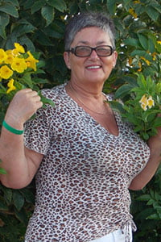

PROGRAMUL DE COMBATERE A BOLILOR AUDITIVE LA UN PREȚ REDUS !

Bună ziua, prieteni!
„Țineți minte un adevăr simplu și nu ascultați pe nimeni: auzul poate fi restaurat, chiar și la o vârstă foarte înaintată”.
Cu o lună și jumătate în urmă, a fost lansat programul „O țara sănătoasă” pentru combaterea deficiențelor de auz. În perioada realizării acestui program, orice persoană va putea cumpăra acest produs pentru restaurarea auzului la un preț redus!
Am rugat-o pe Anna Timova, specialist european cu renume în domeniul otorinolaringologiei, cu 30 de ani de experiență, să ne spună mai multe despre programul „O țară sănătoasă”.
Anna Timova. Anna Timova - specialist european onorat în domeniul otorinolaringologiei cu 30 de ani de experiență, șefa Centrului de recuperare a auzului.
Acest specialist susține că poate ajuta chiar și în cazul a 18 ani de hipoacuzie și surditate în doar câteva luni. La fel, ea subliniază faptul că, și în situațiile unei boli avansate, și la o vârstă înaintată, se poate de simțit o îmbunătățire a auzului. Durerile de urechi, spune Anna Timova, la o tratare și abordare corectă, pot dispărea în câteva zile! Având o experiență de 30 de ani de activitate, ea confirmă fiecare afirmație prin practică.
Datorită programului său destul de încărcat, ea comunică rar cu jurnaliștii, dar noi am reușit să obținem și să organizăm un scurt interviu.
- Bună ziua, Anna. Spuneți, vă rog, este adevărată afirmația, că bolile de urechi: hipoacuzia și surditatea sunt însoțitori „obligatorii” ai vârstei maturității?
- Bună ziua! Desigur, acest lucru nu este adevărat. Însoțitori obligatori ai vârstei maturității - este încrederea excesivă în specialiștii la care vă adresați timp de 10 ani, dar folos din aceasta este foarte puțin. În realitate, bolile urechii interne și ale nervului auditiv, inflamația urechii medii pe fondul bolilor infecțioase, cum ar fi: meningita, gripa, consecințele traumei și chiar surditatea genetică nu reprezintă o condamnare la orice vârstă. Nu este vorba de nicio minune, ci de o știința obișnuită.
Mai mult decât atât, dacă știi secretul și aplici puțină știință, atunci un rezultat pozitiv poate fi obținut chiar și acasă și destul de repede, am verificat deja acest lucru în baza clienților mei de mai multe ori.
- Și în ce constă acest secret?
- Secretul constă în a înțelege de ce aveți durere. În general, în enciclopedii există până la 147 de motive posibile pentru dezvoltarea surdității și a pierderii auzului, dar consecința este cu siguranță una - pragul auzului normal crește semnificativ, de unde și problemele cu percepția sunetului. Și de multe ori organul auzului se uzează pur și simplu din cauza circulației reduse a sângelui.

Iată și secretul - prin restabilirea aportului de sânge la ureche, putem „salva” auzul!
- Da, însă, se consideră că este aproape imposibil să restabiliți auzul după 40 de ani?
- Prostii sunt toate acestea! Eu însumi am aruncat aparatul auditiv pe care l-am purtat după accident, pe atunci aveam peste 40 de ani.
- Care sunt primele semne ale deficienței de auz?
- Surditatea poate fi rezultatul proceselor inflamatorii urechii medii, laringita, nervul auditiv sau zona creierului responsabilă pentru analiza auditivă. Unele boli infecțioase, cum ar fi meningita, rujeola, scarlatina, oreionul, gripa, de asemenea pot fi cauza surdității dobândite. Expunerea la riscuri profesionale, vibrații, zgomot, vapori de plumb, mercur, arsenic provoacă, de asemenea, deficiențe de auz și surditate. Este important de luat în considerare faptul că nivelul auzului este afectat de stări și boli precum boala Meniere, îmbătrânirea, toxoplasmoza, pemfigus eritem, inflamația acută a urechii, otita medie recurentă. La adulți, surditatea poate apărea brusc sau se poate dezvolta treptat.
Pierderea acută a auzului este adesea rezultatul unei ischemii cerebrale sau a unei hemoragii intracraniene în țesutul cerebral, precum și a expunerii bruște la sunet puternic, fluctuații ale tensiunii arteriale, traumatisme craniene și otrăviri. Unele boli infecțioase, utilizarea necontrolată a diferitelor mijloace provoacă dezvoltarea rapidă a surdității, dar surditatea absolută dobândită este un fenomen destul de rar. Bolile inflamatorii ale urechii medii nu deseori duc la pierderea auzului, deși uneori poate fi cauza dezvoltării surdității. În cazul otosclerozei și aterosclerozei vaselor creierului, surditatea se dezvoltă lent și primul semn poate fi zgomotul constant în urechi. Dat fiind faptul că înrăutățirea auzului și progresarea surdității nu apar imediat, treptat, pacientul observă acest lucru numai atunci când pierderea auzului atinge un anumit nivel. În acest sens, prevenirea în timp util a bolilor asociate surdității, precum și utilizarea tehnicilor corecte pentru a preveni dezvoltarea bolilor, joacă un rol important.
- V-a reușit să restabiliți auzul oamenilor?
- Și de mai multe ori. Și majoritatea lor sunt oameni obișnuiți de peste 40 de ani, care au dezvoltat boli „odată cu vârsta”. Ei vin cu probleme foarte similare: inflamația nervului auditiv, surditate parțială și hipoacuzia legată de vârstă. Aceste boli creează dificultăți și îngreunează viața.
Ei plâng, au dureri, le este greu să meargă. Și, cât n-ar fi de straniu, oameni maturi. Și se plâng: „Pentru ce mie asta, de ce eu?” Iar eu le răspund: haideți să nu plângem, dar să restabilim auzul.
- Și cum să restabilești auzul la această vârstă?
- Până de curând, ajutam oamenii cu ajutorul terapiei fizice și magnetice, sunt doar 96 de exerciții în complex. Aceasta este o metodă extrem de eficientă, dar foarte dificilă și consumatoare de timp. Oamenii au dureri, le este complicat, nu au suficient timp pentru a vizita sălile de fizioterapie. Eram încrezută că trebuie să existe o cale mai modernă și mai ușoară - și am găsit-o.
- Ce interesant! Puteți spune cititorilor noștri mai multe despre aceasta?
- Da, le voi povesti. Centrul nostru a fost unul dintre primii care au primit acces la un nou remediu pentru hipoacuzie și surditate. Recunosc, când am auzit despre el pentru prima dată - eu am râs pur și simplu, pentru că nu credeam în eficacitatea acestuia. Dar am fost uimită când am terminat testarea: 4 567 de persoane au scăpat de dureri, ceea ce reprezintă mai mult de 94% din totalul subiecților, 5,6% au simțit îmbunătățiri semnificative și doar la 0,4% nu s-a observat nicio îmbunătățire.
- Și ce fel de remediu este acesta?
- Eu vorbesc despre . Acesta este un remediu care ajută, în cel mai scurt timp posibil, să uiți de durerile de urechi, inflamații, hipoacuzie și surditate. Și după ce ați urmat mai multe cursuri de primire, el poate ajuta chiar și în situații dificile grave.
El este produs doar în Europa, iar Centrul a cheltuit 1,3 milioane EUR pentru elaborarea rețetei de producere. Și, apropo, noi am plătit aproape 4 milioane pentru dreptul de a realiza acest remediu. În perioada actuală, producătorul oficial oferă produsul la un preț promoțional - .
- Și cum acționează acest „remediu miraculos”?
- Tocmai că nu există niciun miracol aici, știință uscată. Principalele ingrediente ale produsului sunt componentele de proveniență naturală (melatonină, extract de ginkgo biloba, magneziu, zinc, vitamina C și vitaminele grupei B)1. Sarcina lor principală este de a păstra auzul prin somn sănătos și sistemul nervos. Vă puteți imagina puterea biologică a unui astfel de mecanism? Nimic mai eficient pentru activarea auzului în natură nu există încă în ziua de astăzi. Anume componentele naturale își aduc contribuția semnificativă la eficacitatea produsului.
Chiar și o singură doză este suficientă pentru a activa mai mult de 930.000 de celule, care sunt direct implicate în procesul de recuperare a auzului. Și acest lucru are loc de fiecare dată. În aceasta și constă principiul cheie al acțiunii remediului.
- Sună impresionant. Doar explicați-ne ce înseamnă acest lucru pentru oamenii simpli care sunt bolnavi?
- Aceasta înseamnă că medicina națională medievală ține de trecut și că acum este posibil să lupți cu bolile acasă. nu îngheață, nu ameliorează durerea, el „repornește” organismul la nivel celular. El ajută la eliminarea cauzei durerilor în sine, hipoacuzie și surdității. Și, de asemenea, contribuie la revenirea organelor auditive la starea lor inițială, normală. Omul nu doar că scapă de manifestările bolii, ci „îndepărtează rădăcina” bolii - atrofia celulelor nervoase ale organelor auditive.
În chiar prima zi, ajută la lansarea sistemului de regenerare ale organismului. La fel și pentru a opri sindromul durerii, veți simți aceasta imediat. După primul curs de admitere, procesul poate fi finalizat, iar principalul lucru aici este de a preveni reapariția hipoacuzie prin repetarea promptă a cursului. Dar trebuie de asemenea să țineți minte, că efectul depinde de caracteristicile individuale ale organismului.
Cu sprijinul Centrului nostru, a fost realizat un sondaj care ne-a depășit așteptările:
Cum ați scăpat de problemele de auz?
23%
47%
8%
17%
5%
- Acest remediu ajută doar împotriva hipoacuziei și a surdității?
- Nu, eu doar vă spun: el acționează la nivel celular, contribuind la refacerea celulelor auditive. Ajută la diferite boli legate de organele auzului - inflamație, durere, consecințele bolilor infecțioase, leziuni.
- Este un remediu foarte interesant. El într-adevăr acționează asupra cauzei apariției acestor boli și nu doar ajută la eliminarea durerii?
- ajută și elimină durerea (la etapele inițiale de primire), la fel și hipoacuzia și surditatea. Vreau să mă înțelegeți corect - pentru majoritatea clienților mei, acest remediu este cel mai simplu, cel mai eficient și accesibil2.
- Ați spus că poate fi cumpărat cu reducere? Oricine poate face acest lucru?
- Da, absolut oricine. Adevărul este că există o mică nuanță. În acest moment, programul funcționează, dar nu va fi întotdeauna așa.
Dat fiind faptul că rețelele de farmacii private au refuzat să ne ajute la realizarea acestui remediu, motivând reticența lor prin faptul că pentru ei nu este profitabil din punct de vedere economic. Orice s-ar putea spune, farmaciile private sunt încă organizații comerciale care sunt mai interesate să obțină profit decât să îmbunătățească sănătatea populației.
Astfel, am decis să implementăm printr-un site special creat pentru program. Acum acest program se desfășoară în toată țara. Prin urmare, toată lumea poate cumpăra astăzi 3 cu reducere.
În acest moment, a fost deja cumpărat de câteva zeci de mii de oameni. În fiecare zi primim o mulțime de păreri pozitive cu privire la acest remediu, precum și cuvinte de mulțumire. Acest remediu ajută multor oameni.
- Cred că mulți vor întreba: de unde puteți cumpăra ?
- Am vrut să începem vânzări la scară largă - dar nu putem ajunge la un acord cu farmaciștii, deoarece produsul le-ar putea afecta afacerea. Oamenii cumpără produsele lor de ani de zile, iar numărul clienților este în creștere și sunt mulțumiți de această stare de lucruri.
Prin urmare, acum vindem produsul exclusiv pe site-ul nostru oficial. Dar există și avantaje aici - vindem fără intermediari, iar acest lucru ne permite să stabilim prețul de 4,7 ori mai mic decât prețul pieței.
Livrarea se face prin poștă, plata la primirea coletului, și nu aveți nevoie de controlul specialistului pentru a utiliza produsul - există instrucțiuni detaliate. În orice caz, nu mă credeți pe cuvânt? Încercați produsele altor producători. Dar sunt convinsă că nu veți găsi nimic, nici de la distanță, similar cu acest remediu în ceea ce privește eficacitatea sa.
- Anna, vă mulțumesc pentru interviu! Poate doriți să adăugați încă ceva pentru cititorii noștri înainte de a ne lua la rămas bun?
- Da! Da, desigur. Vreau să atrag atenția cititorilor că bolile de urechi și de auz „întineresc” și chiar durerile periodice ușoare la nivelul urechilor și o ușoară astupare a urechii sunt un motiv pentru a atrage atenție asupra problemei.
Și țineți minte: bolile organelor auditive, hipoacuzia și cu atât mai mult - surditatea, nu doar aduc disconfort. Ele pot scurta viața cu 10-15 ani.